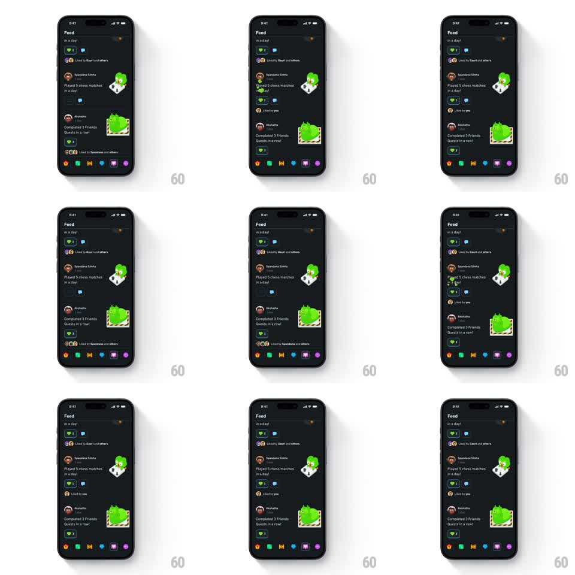

Media
Frame-by-frame

Rebuild this animation 1:1: Duolingo's feed like - tapping the heart on a feed item fills it green with a bouncy scale-and-wiggle pop while the count ticks up.

Rebuild this animation 1:1: Duolingo's feed like - tapping the heart on a feed item fills it green with a bouncy scale-and-wiggle pop while the count ticks up. ## Integration Integration: stack-agnostic spec - springs given as stiffness/damping, timed motions as duration + curve; map every value to your framework and animation library of choice. ## Scene Duolingo Feed, near-black: "Feed" title, a list of friend activity items (avatar, name, activity like "Played 5 chess matches in a day!", sticker art on the right), each with a heart + like count and a comment bubble; the colorful bottom nav sits below. ## Motion spec Pattern: bouncy heart fill with wiggle and count tick. - Tap the outline heart: it fills Duolingo green while popping scale 1 -> 1.45 with a stiff spring (~500/12, one clear overshoot), then wiggles rotation +12deg -> -8deg -> 0deg over 250ms as the scale settles back to 1. - The like count beside the heart ticks up one with a digit roll (150ms) and a brief green flash on the number (300ms fade-out). - If the item shows a "Liked by X and others" row, the liker avatar stack gains your avatar sliding in from the left (200ms, spring ~400/18). - Unliking reverses plainly: fill drains to outline (150ms, no wiggle, no pop) and the count rolls down. - Double-tap on the sticker art also triggers the same heart pop on the row's heart, plus a transient heart burst at the tap point (scale 0 -> 1.2 -> fade, 400ms). ## Calibration - The pop is quick and complete in under 500ms - it must never delay scrolling. - Green fill, white outline default - match Duolingo's exact heart treatment. ## Reduced motion Heart fills with a 150ms crossfade; count changes without rolling. ## Don't miss - The wiggle happens after the scale peak, not during it. - The comment bubble next to the heart never animates - only the heart and count.